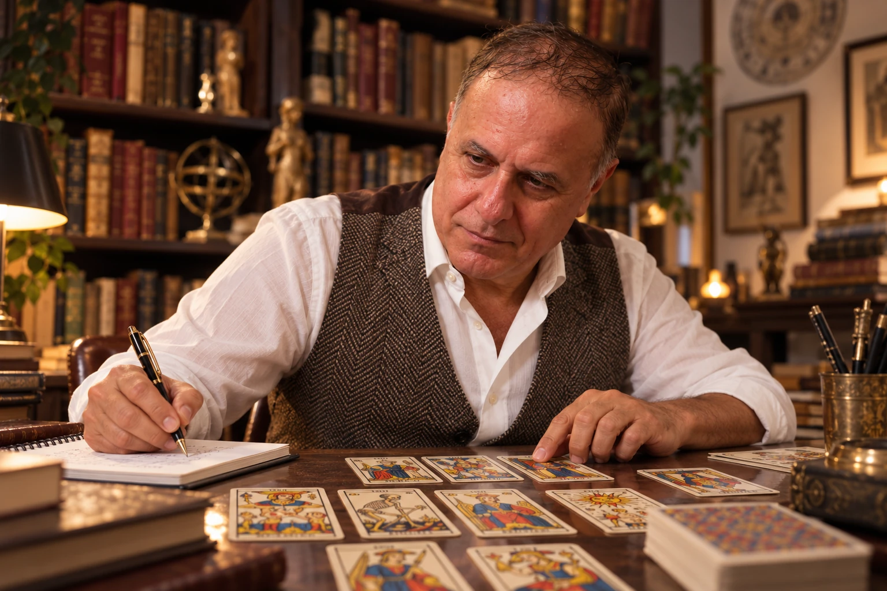

PROGETTO CREATIVO
«Ho un’idea, ma non riesco a darle forma.»
Per esempio, una musicista ha una melodia in mente e vuole capire che cosa manca per esprimere ciò che desidera.
CONSULENZA INDIVIDUALE CON I TAROCCHI
Dalle immagini alle scelte, con i Tarocchi di Marsiglia e il dialogo.
Esploriamo una situazione concreta: un progetto, una decisione, un cambiamento o una relazione. Partiamo dalla tua domanda e da ciò che le immagini fanno emergere per te.
Parliamo della tua domanda Come si svolge il percorso ↓
PAOLO MUSETTI · SCENA ILLUSTRATIVA
DA DOVE VUOI PARTIRE?
Le carte non danno verdetti e non predicono un esito. Le osserviamo insieme, prima di interpretare: dettagli, gesti e relazioni tra le figure diventano spunti per collegare l’immagine alla tua esperienza. Il senso si costruisce nel dialogo; la scelta resta tua.
IL METODO ARIANNA
Osservare. Ascoltare.
Riconoscere ciò che risuona.
Il Metodo Arianna mette in relazione la domanda, le immagini dei Tarocchi e la situazione della persona. Procediamo con attenzione a ciò che vedi, alle associazioni che emergono e alle parole che senti vicine alla tua esperienza.

Creiamo uno spazio di ascolto e mettiamo a fuoco il tema che desideri portare.
Partiamo dalla situazione concreta e troviamo insieme una domanda aperta, utile da esplorare.
Ci fermiamo sui dettagli delle carte prima di ricorrere a significati già conosciuti. Notiamo cosa attira il tuo sguardo.
Mettiamo in dialogo immagini, parole e associazioni con la tua esperienza, verificando cosa ha senso per te.
Raccogliamo ciò che emerge in una parola, una domanda o un possibile passo concreto da portare con te.
Le carte aprono prospettive, non decidono al posto tuo. La Traccia nasce dalla persona e resta sua.
DAL SIMBOLO A UN GESTO POSSIBILE
Se lo desideri, il percorso può includere un gesto simbolico ispirato agli atti di psicomagia di Alejandro Jodorowsky. Lo contestualizziamo rispetto alla tua domanda e lo costruiamo nel dialogo: può essere un modo personale per dare forma a un’intenzione o a un passaggio che vuoi esplorare.
È una possibilità facoltativa, mai un esercizio imposto o una promessa di risultato. La decisione di farlo, e il significato che gli attribuisci, restano tuoi.
A CHI PUÒ ESSERE UTILE
Esempi per immaginare
come si può partire.
PROGETTO CREATIVO
Per esempio, una musicista ha una melodia in mente e vuole capire che cosa manca per esprimere ciò che desidera.
SCELTA PROFESSIONALE
Una persona valuta se restare nel proprio ruolo o esplorare una nuova direzione e vuole chiarire quali aspetti considerare.
RELAZIONE
Una persona desidera mettere a fuoco bisogni, aspettative e possibilità nel proprio modo di vivere una relazione.
PROGETTO DA AVVIARE
Per esempio, chi desidera proporre un laboratorio può esplorare cosa vuole offrire e quale primo passo è alla sua portata.
Sono esempi illustrativi, non testimonianze di clienti. Ogni consulenza parte dalla situazione e dalle parole di chi la porta.
Raccontami in poche righe la situazione che desideri esplorare.